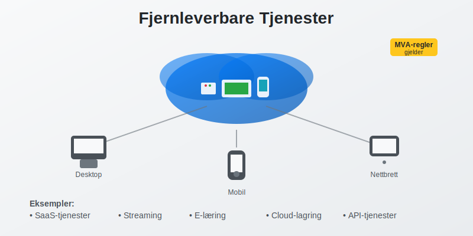
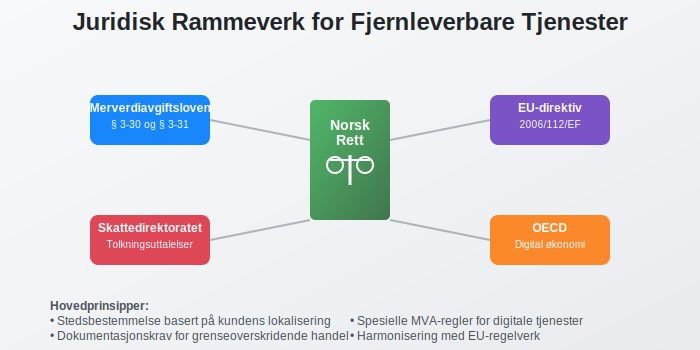
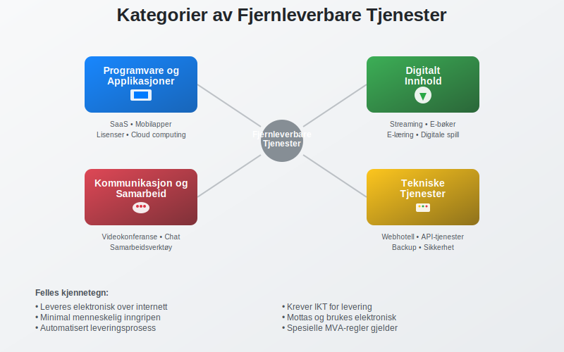

Fjernleverbare tjenester er tjenester som kan leveres elektronisk over internett uten at leverandøren og kunden trenger å være fysisk til stede på samme sted. Disse digitale tjenestene har fått økt betydning i moderne økonomi og har spesielle MVA-regler og bokføringskrav som norske bedrifter må forholde seg til. Forståelse av fjernleverbare tjenester er kritisk for korrekt MVA-behandling og bokføring.

Definisjon av Fjernleverbare Tjenester
Fjernleverbare tjenester er elektroniske tjenester som kjennetegnes ved at de:
- Leveres over internett eller andre elektroniske nettverk
- Krever minimal eller ingen menneskelig inngripen fra leverandørens side
- Kan ikke leveres uten informasjons- og kommunikasjonsteknologi
- Mottas og brukes av kunden elektronisk
- Har automatisert leveringsprosess som hovedregel
Juridisk Grunnlag
I norsk rett reguleres fjernleverbare tjenester primært gjennom:
- Merverdiavgiftsloven § 3-30 og § 3-31
- EU-direktiv 2006/112/EF (MVA-direktivet)
- Skattedirektoratets tolkningsuttalelser
- OECD-retningslinjer for digital økonomi

Eksempler på Fjernleverbare Tjenester
Fjernleverbare tjenester omfatter et bredt spekter av digitale tjenester:
Programvare og Applikasjoner
- Software as a Service (SaaS) - skybaserte programløsninger
- Mobilapplikasjoner og nedlastbare programmer
- Lisenser til programvare og digitale verktøy
- Oppdateringer og vedlikehold av programvare
- Cloud computing tjenester
Digitalt Innhold
- Streaming-tjenester for video og musikk
- E-bøker og digitale publikasjoner
- Online-kurs og e-læring
- Digitale spill og underholdning
- Podkaster og lydinnhold
Kommunikasjon og Samarbeid
- Videokonferanse-tjenester som Zoom, Teams
- Kommunikasjonsplattformer som Slack, Discord
- Samarbeidsverktøy som Google Workspace, Office 365
- Sosiale medier og nettverkstjenester
- E-posttjenester og meldingsapper
Tekniske Tjenester
- Webhotell og domenenetjenester
- Backup og lagringsstjenester
- Sikkerhetstjenester og antivirus
- API-tjenester og integrasjoner
- Teknisk support via chat eller fjernstøtte

MVA-regler for Fjernleverbare Tjenester
MVA-behandlingen av fjernleverbare tjenester følger spesielle regler som skiller seg fra ordinære tjenester:
Stedsbestemmelse
Fjernleverbare tjenester anses levert der kunden har sitt sete, ikke der leverandøren befinner seg:
| Kundetype | Stedsbestemmelse | MVA-behandling |
|---|---|---|
| Privatpersoner (B2C) | Kundens bostedsland | MVA i kundens land |
| Næringsdrivende (B2B) | Kundens forretningssted | Omvendt avgiftsplikt |
| Offentlige virksomheter | Kundens lokalisering | Spesielle regler |
For øvrig gjelder egne stedsbestemmelsesregler for stedbundne tjenester. Se Stedbunden tjeneste for mer informasjon.
B2C-salg (Business to Consumer)
Ved salg til privatpersoner i andre EU-land:
- Norske bedrifter må registrere seg for MVA i kundens land
- Alternativt kan MOSS-ordningen (Mini One Stop Shop) benyttes
- MVA-satsen i kundens land skal anvendes
- Dokumentasjon av kundens lokalisering er påkrevd
B2B-salg (Business to Business)
Ved salg til næringsdrivende i andre EU-land:
- Omvendt avgiftsplikt - kunden betaler MVA
- Leverandøren skal ikke beregne MVA
- Kundens MVA-nummer må dokumenteres og valideres
- Faktura må inneholde henvisning til omvendt avgiftsplikt

Bokføring av Fjernleverbare Tjenester
Korrekt bokføring av fjernleverbare tjenester krever forståelse av både inntektsføring og MVA-behandling:
Inntektsføring
Inntekter fra fjernleverbare tjenester skal føres når:
- Tjenesten er levert til kunden
- Kunden har fått tilgang til tjenesten
- Betalingsforpliktelsen er oppstått
- Leveringsvilkårene er oppfylt
Bokføringseksempel - B2C-salg
Scenario: Norsk SaaS-bedrift selger abonnement til tysk privatperson for 1.000 kr + tysk MVA (19%)
Salg til tysk kunde:
Debet: Kundefordringer 1.190 kr
Kredit: Salgsinntekt 1.000 kr
Kredit: Utgående MVA (Tyskland) 190 kr
Bokføringseksempel - B2B-salg
Scenario: Norsk bedrift selger API-tjeneste til svensk bedrift for 5.000 kr (omvendt avgiftsplikt)
Salg til svensk bedrift:
Debet: Kundefordringer 5.000 kr
Kredit: Salgsinntekt 5.000 kr
(Ingen MVA - omvendt avgiftsplikt)
Dokumentasjonskrav
For fjernleverbare tjenester må følgende dokumenteres:
- Kundens identitet og lokalisering
- Tjenestens art og leveringstidspunkt
- Betalingsinformasjon og valuta
- MVA-behandling og eventuelle unntak
- Tekniske leveringsdetaljer (IP-adresse, etc.)

Praktiske Utfordringer
Bedrifter som leverer fjernleverbare tjenester møter flere praktiske utfordringer:
Identifikasjon av Kundens Lokalisering
- IP-adresse kan være misvisende (VPN, proxy)
- Betalingsinformasjon (kredittkort, bankkonto)
- Fakturaadresse og leveringsadresse
- Kundens egenerklæring om lokalisering
- Kombinasjon av indikatorer for sikker identifikasjon
MVA-registrering i Multiple Land
- Terskelverdier varierer mellom land
- Registreringsprosesser er forskjellige
- Rapporteringsfrister og -format varierer
- Språkbarrierer og lokale krav
- Kostnader ved registrering og compliance
Tekniske Løsninger
Moderne bedrifter benytter ofte:
- Automatiserte MVA-systemer som TaxJar, Avalara
- Geolokalisering og IP-tracking
- Integrerte betalingsløsninger med MVA-håndtering
- ERP-systemer med internasjonal MVA-støtte
- Compliance-verktøy for dokumentasjon
Fremtidige Utviklingstrekk
Området for fjernleverbare tjenester er i kontinuerlig utvikling:
Digitale Tjenester Pakke (DSP)
EU arbeider med nye regler som vil:
- Forenkle MVA-regler for digitale tjenester
- Harmonisere rapporteringskrav
- Redusere administrative byrder
- Forbedre grenseoverskridende handel
Kunstig Intelligens og Automatisering
- AI-drevne tjenester får økt betydning
- Automatisk MVA-beregning og rapportering
- Prediktiv compliance og risikovurdering
- Blockchain-basert dokumentasjon og sporing
Bærekraft og ESG
- Miljørapportering for digitale tjenester
- Karbonfotavtrykk av cloud-tjenester
- Sosial påvirkning av digitalisering
- Governance av data og personvern

Sammenheng med Andre Regnskapskonsepter
Fjernleverbare tjenester påvirker flere andre områder i regnskapet:
Internprising
- Transfer pricing for konserninternt salg
- Dokumentasjon av armslengdeprinsippet
- Allokering av inntekter mellom land
- OECD BEPS Action 1 - digital økonomi
Permanent Etablering
- Digital PE - når oppstår skatteplikt?
- Betydelig digital tilstedeværelse som kriterium
- Terskelverdier for inntekter og brukere
- Allokering av overskudd til PE
Immaterielle Eiendeler
Fjernleverbare tjenester er ofte basert på:
- Programvare og teknologiske løsninger
- Databaser og kunderegistre
- Merkevarer og goodwill
- Patenter og opphavsrettigheter
Compliance og Risikostyring
Effektiv håndtering av fjernleverbare tjenester krever:
Risikovurdering
- MVA-risiko ved feil stedsbestemmelse
- Skattemessig risiko ved permanent etablering
- Operasjonell risiko ved systemfeil
- Regulatorisk risiko ved regelendringer
Kontrollsystemer
- Automatiserte kontroller i IT-systemer
- Månedlige avstemminger av MVA-beregninger
- Kvartalsvise gjennomganger av nye kunder
- Årlige compliance-revisjoner av prosesser
Dokumentasjon
Bedriften må opprettholde:
- Detaljerte kunderegistre med lokalisering
- Tekniske logger over tjenesteleveranser
- MVA-beregninger og begrunnelser
- Korrespondanse med skattemyndigheter

Praktiske Råd for Bedrifter
For Oppstartsbedrifter
- Start enkelt - fokuser på hjemmemarkedet først
- Implementer riktige systemer fra dag én
- Søk profesjonell rådgivning tidlig
- Planlegg for internasjonal ekspansjon
For Etablerte Bedrifter
- Gjennomgå eksisterende prosesser og systemer
- Oppdater kunderegistre med lokalisering
- Implementer automatiserte MVA-løsninger
- Tren personalet i nye regler
For Regnskapsførere
- Hold deg oppdatert på regelendringer
- Invester i spesialiserte verktøy
- Bygg kompetanse innen digital økonomi
- Samarbeid med internasjonale eksperter
Konklusjon
Fjernleverbare tjenester representerer en voksende del av moderne økonomi og krever spesialisert kunnskap innen både regnskap og MVA-behandling. Bedrifter som leverer slike tjenester må:
- Forstå komplekse stedsbestemmelsesregler
- Implementere robuste systemer for compliance
- Dokumentere alle transaksjoner grundig
- Holde seg oppdatert på regelendringer
Med riktig tilnærming kan fjernleverbare tjenester være en lønnsom og skalerbar forretningsmodell som åpner for global vekst. Nøkkelen ligger i å etablere solide prosesser fra starten og investere i riktige verktøy og kompetanse.
For bedrifter som vurderer å tilby fjernleverbare tjenester, anbefales det å søke profesjonell rådgivning for å sikre korrekt håndtering av alle regnskapsmessige og skattemessige aspekter. Dette vil minimere risiko og maksimere mulighetene i det digitale markedet.